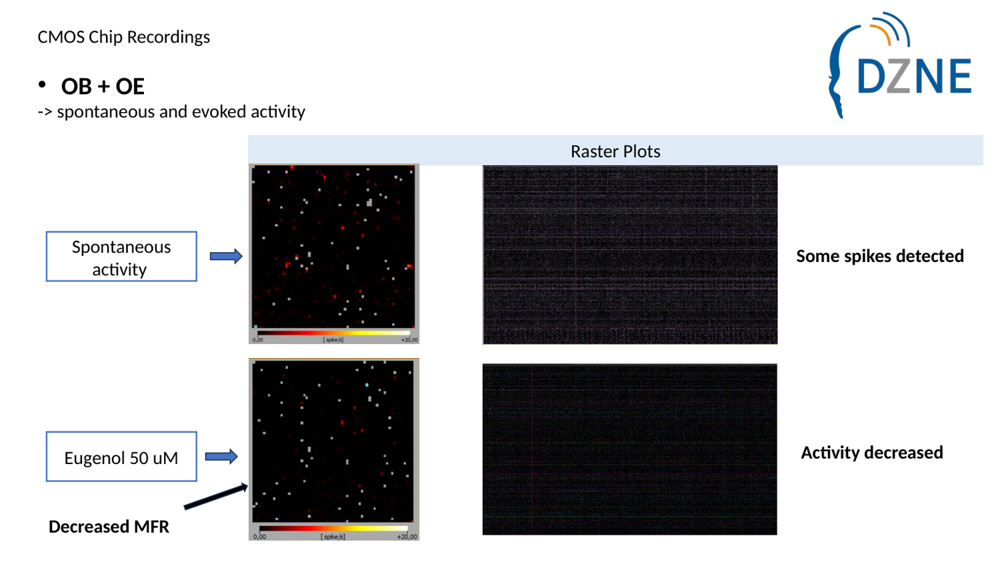

Olfactory neural cultures & odorant responses
German Center for Neurodegenerative Diseases (DZNE), Dresden
Can the electrical activity of olfactory neural cultures reveal reproducible responses to different odorants? My internship explored this question using olfactory bulb and olfactory epithelium cultures, co-culture preparations, and extracellular recordings on microelectrode arrays.
01 / Experimental model
Olfactory bulb and epithelium
I worked with OB and OE cultures and co-cultures, including different cell proportions. Preparation, maintenance, media changes and microscopy were part of the experimental workflow.
Research rationale
The broader goal was to investigate whether odorant-dependent electrophysiological signatures could support biological olfactory sensing, potentially relevant to neurodegenerative disease research.
Culture conditions and seeding strategy
Preparations included olfactory bulb (OB)-only and olfactory epithelium (OE)-only controls and mixed OB/OE cultures. The October 2023 24-well MEA protocol compared three OB:OE proportions at 50,000 cells per well. Both pre-mixed and sequential plating approaches were documented; these represent experimental conditions, not evidence that one method performed better.
| OB : OE ratio | OB cells / well | OE cells / well |
|---|---|---|
| 70 : 30 | 35,000 | 15,000 |
| 50 : 50 | 25,000 | 25,000 |
| 30 : 70 | 15,000 | 35,000 |
Seeding comparison: OB and OE were either mixed before plating or plated sequentially (OE added approximately five minutes after OB).
Additional exploratory experiment — human olfactory epithelium
A separate exploratory preparation incorporated human OE cells into the culture work. These preparations showed cell clumping and agglomerate formation, making culture organization and interpretation difficult. Electrophysiological activity did not yield a clear, reproducible firing pattern from which to draw a firm conclusion. This was an exploratory extension rather than a validated comparison or a main outcome of the rat OB/OE co-culture study.
02 / Stimulation & recordings
MEA electrophysiology
Extracellular neural activity was recorded using Axion BioSystems MEA equipment, with spontaneous activity observed before chemical stimulation.
Odorant exposure
Eugenol and isoamyl acetate were applied to examine changes in spiking and bursting. Different culture configurations and stimulation conditions were compared.
Longitudinal culture monitoring
These original figures compare OE-only cultures with three OB/OE ratios across days in vitro (DIV 8–21). They characterize electrode-associated changes during culture development; they do not directly quantify synaptic connectivity. Routine microscopy and viability observations provided complementary information during culture maintenance. Immunofluorescence was performed only at the end of experiments, after fixation, to characterize cellular markers and morphology; it was not a longitudinal viability assay. Too few independent biological preparations were available to establish which culture condition performed best.


03 / Data & image analysis
MEA signal analysis
I compared spontaneous and stimulation-associated activity using mean firing rate (MFR), mean burst rate (MBR), spike count, inter-spike interval (ISI), inter-burst interval (IBI), and burst-related measures. These describe changes in extracellular activity; they do not, on their own, establish odorant specificity.
Longitudinal culture measurements
Electrode coverage and impedance were compared across days in vitro (DIV 8–21), alongside routine microscopy and viability observations during culture maintenance. Coverage and impedance describe electrode-associated changes, not direct measurements of neuronal survival or synaptic connectivity.
Endpoint confocal image analysis
Immunofluorescence was performed after fixation at the end of experiments to characterize cell-associated markers and morphology, not to measure viability over time. The recorded staining panel included OMP, MAP2 and βIV-tubulin (primary antibodies 1:500), fluorescent secondary antibodies (1:1000) and Hoechst 33342 (1:2000). βIV-tubulin should not be confused with βIII-tubulin (Tuj1). Exact antibody identities and fluorophore assignments should be verified against the laboratory records.
The archived workflow included 4% paraformaldehyde fixation, 0.1% PBST permeabilization, 5% normal goat serum blocking and overnight primary-antibody incubation at 4 °C. These are recorded protocol details rather than evidence of quantified marker expression.
04 / Results & discussion
What the experiments showed
Neural activity and experimental responses could be recorded across the preparations. However, variability prevented a consistent, reproducible odorant-specific electrophysiological fingerprint from being established.
What the work was not
These experiments used neural cultures and co-cultures on MEAs; they did not establish a validated diagnostic sensor or a completed organ-on-chip device.
Culture optimization: The electrode-coverage and impedance plots suggest that culture composition was associated with different trajectories across DIV 8–21. The experimental plans also document multiple plating strategies. Routine morphology and viability observations accompanied culture maintenance, whereas immunofluorescence was restricted to fixed endpoint samples. These different measurements should not be treated as equivalent evidence of longitudinal culture health. Limited independent biological replication prevented robust comparisons of the culture configurations.
Interpretation safeguards: Changes after odorant application must be interpreted alongside handling, vehicle effects, culture-to-culture variability and washout observations. No validated odorant-specific classifier was established.
Evidence and interpretation — important distinctions
- Unit of replication: wells, electrodes and repeated measurements from one preparation are not automatically independent biological replicates; the number of independent preparations must be reported before statistical claims.
- Endpoint staining: marker expression and morphology characterize fixed cells but cannot retrospectively establish viability at earlier DIV.
- Impedance / coverage: these measurements can reflect electrode-associated culture changes, not direct synaptic connectivity or a validated survival fraction.
05 / Experimental media
Original endpoint immunofluorescence composite from the DZNE experimental archive (extracted from the supplied July 2023 preparation PDF, page 6). This is a fixed-sample image, not a longitudinal viability measurement. Channel annotations are retained as recorded; marker/channel assignments should be checked against the original microscope files before public release.

Original source: PREP_2023_07_07 fresh rat.pdf, page 6. The composite has not been recreated or relabelled.
Example electrophysiology recording
Original OB/OE eugenol recording figure from the supplied Summary raster plots presentation (slide 8). Presented as an exploratory recording example, not evidence of reproducible odorant specificity.

06 / What I would improve in a follow-up study
Proposed changes for a follow-up study, informed by the limitations of the original experiments. These were not all performed during the internship.
Experimental design
- Predefine OB-only, OE-only and OB/OE ratios and compare pre-mixed versus sequential seeding with balanced replicates across independent preparations. [1]
- Record matched vehicle-only, pipetting/sham-addition and washout controls; randomize well positions and stimulation order to distinguish compound responses from handling artifacts. [1]
- Increase the number of independent culture preparations and biological replicates. Standardize longitudinal microscopy and viability checks at matched DIV, and collect separately allocated, fixed samples for endpoint immunofluorescence at predefined DIV if temporal comparisons are needed. [1]
Electrophysiological analysis
- Predefine spike/burst detection parameters and electrode inclusion thresholds; preserve raw recordings and analysis scripts for reproducibility. [1]
- Compare baseline, vehicle, stimulation and washout using within-well normalized responses as well as absolute MFR/MBR, ISI and network burst statistics. [1]
- Report individual wells and independent culture preparations, uncertainty intervals and sample sizes; avoid treating multiple electrodes from one well as independent biological replicates. [1]
- For endpoint microscopy, use consistent acquisition settings, scale bars, appropriate staining controls and predefined image-analysis criteria. If changes across DIV are of interest, allocate independent cultures for fixation at each time point. [2] [3]
07 / References
- Cotterill et al. (2016), Characterization of Early Cortical Neural Network Development in Multiwell Microelectrode Array Plates
- Isolation and Differentiation of Neurons and Glial Cells from Olfactory Epithelium in Living Subjects (2023)
- Technique of flat-mount immunostaining for mapping the olfactory epithelium and counting olfactory sensory neurons (2023)